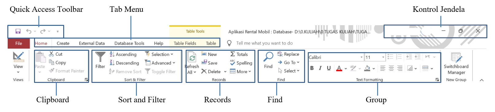

Microsoft Access adalah aplikasi perangkat lunak dari Microsoft yang digunakan untuk membuat dan mengelola basis data (database). Microsoft Access adalah bagian dari Microsoft Office, dan memungkinkan pengguna untuk menyimpan, mengatur, dan menganalisis data dalam format yang terstruktur. Dengan Access, Anda dapat dengan mudah membuat aplikasi basis data berbasis desktop tanpa memerlukan banyak keahlian pemrograman.
1. Quick Access Toolbar
Atau Bilah Alat Akses Cepat adalah fitur yang ada di bagian atas jendela aplikasi Microsoft Access. Bagian ini berisi kumpulan perintah yang sering digunakan, seperti menyimpan, membatalkan, dan mengulangi tindakan. Anda bisa menyesuaikan perintah-perintah ini sesuai kebutuhan.
2. Tab Menu
Bagian ini berisi tab-tab yang berisi berbagai perintah yang terorganisir berdasarkan kategori. Misalnya, tab "Home" berisi perintah untuk mengedit teks, memformat, dan menyalin data. Memudahkan Anda menemukan perintah yang Anda butuhkan karena sudah dikelompokkan berdasarkan kategori.
3. Control jendela
Bagian ini berisi tombol-tombol untuk mengontrol tampilan jendela aplikasi, seperti meminimalkan, memaksimalkan, dan menutup jendela. Memungkinkan untuk mengatur tampilan jendela sesuai dengan preferensi Anda.
4. Clipboard
Clipboard adalah area penyimpanan sementara yang digunakan untuk menyimpan data yang telah Anda salin (copy) atau potong (cut). Data yang disimpan di clipboard dapat berupa teks, gambar, atau bahkan objek database seperti tabel atau query.
- Cut (Potong): Berfungsi untuk Menghapus data yang dipilih dari lokasi asalnya dan menyalinnya ke clipboard.
- Copy (Salin): Berfungsi untuk Menyalin data yang dipilih ke clipboard tanpa menghapus data asli.
- Paste (Tempel): Berfungsi untuk Menempelkan data yang ada di clipboard ke lokasi yang Anda inginkan.
- Format Painter: Berfungsi untuk Menyalin format dari satu bagian data ke bagian data lainnya
5. Sort & Filter
adalah fitur yang berguna dalam Microsoft Access untuk mengatur dan menyaring data dalam tabel Anda.
- Ascending (Urutkan Naik): Berfungsi untuk Mengurutkan data dalam kolom yang dipilih dari nilai terkecil ke nilai terbesar (untuk data numerik) atau dari A ke Z (untuk data teks).
- Descending (Urutkan Turun) : Berfungsi untuk Kebalikan dari Sort Ascending, yaitu mengurutkan data dari nilai terbesar ke terkecil atau dari Z ke A.
- Selection (Berdasarkan Pilihan) : Berfungsi untuk Memungkinkan Anda membuat filter berdasarkan nilai yang dipilih dalam kolom tertentu. Misalnya, Anda ingin menampilkan hanya data dengan nilai "Jakarta" pada kolom "Kota".
- Advanced (Tingkat Lanjut): Berfungsi untuk Memberikan opsi yang lebih fleksibel untuk membuat filter, seperti menggabungkan beberapa kriteria atau menggunakan ekspresi.
6. Records
dalam Microsoft Access adalah sebuah baris data lengkap dalam sebuah tabel.
- Refresh All : Menerapkan kembali semua filter, kriteria pencarian, atau perubahan tampilan yang sedang aktif.
- New : Berfungsi untuk Menambahkan rekaman baru pada akhir tabel. Ketika Anda mengklik tombol ini, akan muncul baris kosong di bawah rekaman terakhir, siap untuk Anda isi dengan data baru.
- Save : Berfungsi untuk Menyimpan perubahan yang telah Anda buat pada data. Ini sangat penting untuk memastikan data Anda tidak hilang.
- Totals : Berfungsi untuk Menampilkan baris total untuk kolom-kolom numerik dalam tampilan lembar data. Ini berguna untuk melihat ringkasan data, seperti jumlah total, rata-rata, atau jumlah maksimum dan minimum.
- Spelling: Berfungsi untuk Memeriksa ejaan pada data yang dipilih. Fitur ini sangat berguna untuk memastikan data Anda bebas dari kesalahan pengetikan.
- Delete : Berfungsi untuk Menghapus rekaman yang dipilih. Harap berhati-hati saat menggunakan fitur ini, karena data yang dihapus tidak dapat dikembalikan dengan mudah.
- More : Berfungsi untuk Menampilkan menu dropdown yang berisi opsi tambahan untuk mengelola rekaman.
7. Find
Digunakan untuk mencari teks atau nilai tertentu dalam sebuah tabel. Ketika Anda mengklik ikon ini, biasanya akan muncul kotak dialog yang meminta Anda untuk memasukkan kata atau frasa yang ingin Anda cari.
- Replace : Berfungsi untuk Digunakan untuk mengganti semua kemunculan teks atau nilai yang ditemukan dengan teks atau nilai yang baru.
- Go To : Berfungsi untuk Memungkinkan Anda berpindah langsung ke rekaman tertentu dalam tabel.
- Select : Berfungsi untuk Memungkinkan Anda memilih rentang data dalam tabel.
8. Group
Terdiri dari group font :
- Font: Memilih jenis font yang akan digunakan.
- Ukuran Font: Mengatur ukuran font, biasanya dalam satuan poin.
- Warna Font: Mengubah warna teks.
- Gaya Font: Mengatur gaya font seperti tebal (bold), miring (italic), dan garis bawah (underline).
Terdiri dari Group Aligment :
- Rata Kiri: Menyelaraskan teks ke sisi kiri.
- Pusat: Menyelaraskan teks ke tengah.
- Rata Kanan: Menyelaraskan teks ke sisi kanan.
- Justify: Menyelaraskan teks rata kiri dan kanan, mengisi seluruh lebar paragraf